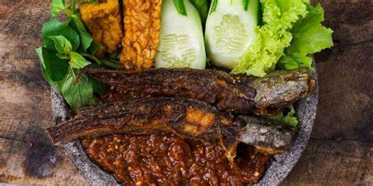

Masakan Jawa
Contoh makanan tradisional Jawa:
- Soto Ayam

Masakan Sunda
Contoh makanan tradisional Sunda:
- Pecel Lele 
Masakan Padang
Contoh makanan tradisional Padang:
- Rendang

Contoh makanan tradisional Jawa:
Contoh makanan tradisional Sunda:
Contoh makanan tradisional Padang: